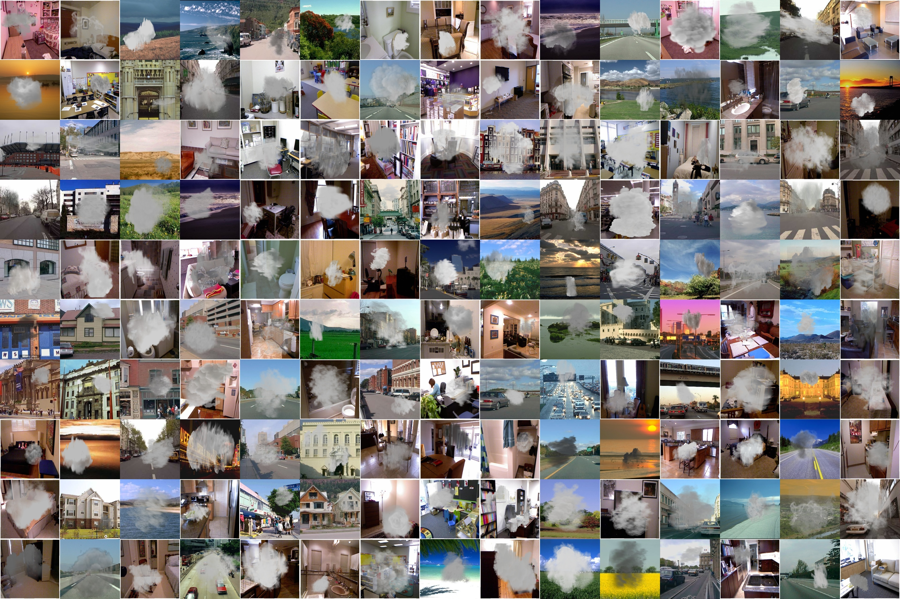

Department of Computer Science and Engineering, Yuan Ze University College of Mathmatics and Computer Science, Fuzhou University IEEE 8th Global Conference on Consumer Electronics (GCCE'19)

Due to the complex scenarios and the limited feature information in a single image, a precise smoke detection is much more challenging in practice. Most of previous smoke detection methods either extract textural and spatiotemporal characteristics of smoke or separate the smoke and background components of the image. However, those methods often fail in detecting smoke positions because of the limited feature information within a single image. Moreover, the task of smoke detection can be better achieved if the extra information from collected training dataset is available. One key issue is how to build a training dataset of paired smoke images and groundtruth bounding box positions for end-to-end learning. This paper proposes a large-scale benchmark image dataset to train a smoke detector. With the built dataset, experimental results demonstrate that the discriminative models can be effectively trained as the smoke detector to detect the smoldering fires precisely.
Our proposed smoke image dataset Smoke 100k consists of 100k synthesized smoke image, smoke free image, smoke mask, and bounding box positions.
There are 3 subsets of synthesized smoke images for simulation of different smoldering fires. 3 subsets are detailed as follows:
Smoke100k-L: samples are synthesized by smoke masks selected from the Low level with twenty kinds of angles,
Smoke100k-M: samples are synthesized by smoke masks selected from the Middle level with eight kinds of angles,
Smoke100k-H: samples are synthesized by smoke masks selected from the High level with fifteen kinds of angles.
For more details of the dataset, please refer to the paper "Smoke 100k: A Database for Smoke Detection".
Amount of synthesized smoke image in each subset of smoke100k dataset are all increased to 40k now.
please download the dataset using Google Drive or Baidu Drive
The Smoke100k dataset is available for non-commercial research purposes only.
All images of the Smoke100k dataset are obtained from the LabelMe dataset [1], NYU dataset [2] which are not property of BigMMS group, Yuan Ze University. The BigMMS group is not responsible for the content nor the meaning of these images.
You agree not to reproduce, duplicate, copy, sell, trade, resell or exploit for any commercial purposes, any portion of the images and any portion of derived data.
You agree not to further copy, publish or distribute any portion of the Smoke100k dataset. Except, for internal use at a single site within the same organization it is allowed to make copies of the dataset.
The BigMMSLAB reserves the right to terminate your access to the Smoke100k dataset at any time.
H. Cheng, J. Yin, B. Chen and Z. Yu, Smoke 100k: A Database for Smoke Detection, 2019 IEEE 8th Global Conference on Consumer Electronics (GCCE), Osaka, Japan, 2019, pp. 596-597, doi: 10.1109/GCCE46687.2019.9015309. [pdf][bib]
[1] B. C. Russell, A. Torralba, K. P. Murphy, and W. T. Freeman, "Labelme: A database and web-based tool for image annotation," International Journal of Computer Vision, vol. 77, no. 1, pp. 157–173, May 2008.
[2] P. K. Nathan Silberman, Derek Hoiem and R. Fergus, "Indoor segmentation and support inference from rgbd images," European Conference on Computer Vision (ECCV), 2012.